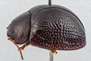
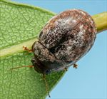
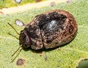
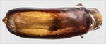
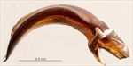
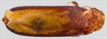
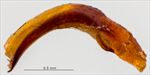
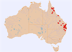

Click on images to enlarge
{kind=link}

Male, Double Island Point, S.E. Queensland
{kind=link}

Female, Spicer's Gap, S.E. Queensland
{kind=link}

Female, Mt. Surprise, North Queensland
{kind=link}

Aedeagus, dorsal view (Gurulmundi, south Queensland)
{kind=link}

Aedeagus, lateral view (Gurulmundi, south Queensland)
{kind=link}

Aedeagus, dorsal view (Laura, North Queensland)
{kind=link}

Aedeagus, lateral view (Laura, North Queensland)
{kind=link}

Distribution
Name
Trachymela sp. Ta62
Reference specimen
2005-244, Fairlight Station, Laura, Northern Queensland.
Adult Description
Length: ♂ 4.8–6.6 mm (n=24), ♀ 5.3–6.7 mm (n=20).
Colouration:
- Head: uniformly dark reddish-brown with black-tipped mandibles, labrum sometimes yellowish-brown; antennomeres 1–3 light-brown, 4–11 similar (North Queensland) or 4–11 grading darker to much darker (rarely almost black) towards apex, dark colouring often more intense along distal and/or lateral margins of antennomeres.
- Pronotum: uniformly dark reddish-brown, concolorous with head or fractionally darker, sometimes with a thin band of a slightly darker brown or black running longitudinally from behind the inside edge of each eye, extreme lateral margin and sometimes part of front margin darker-brown or black.
- Scutellum: brown, concolorous with or fractionally darker than adjacent area of pronotum, usually broadly edged with a slightly darker shade.
- Elytra: brown, concolorous with or fractionally darker than pronotum, usually with a number of diffuse, irregularly shaped areas of slightly darker shade scattered over the whole surface in no discernible pattern, punctures sometimes concolorous with interstices or may be of the darker shade, humeral callus concolorous with or slightly darker than surrounds.
- Venter & Legs: prosternum and thoracic ventrites light- to dark-reddish-brown, ventrite margins often darker, legs similar, abdominal ventrites similar or slightly lighter in shade, elytral epipleura brown.
- Cuticular Wax: light-brown and grey; mostly brown with some of the densest areas of grey cuticular wax on elytra forming a “V” shape, with the apex of V on elytral suture, about ¾ of way to apex, with arms of V running towards but not quite reaching humeral callus. A fainter such grey band from about humeral callus to elytral suture about halfway between scutellum and the other band is usually also present.
Morphology:
- Head: punctures moderately large (pd ≈ 2–2.5× ef) and quite evenly and densely distributed. Antennae short (AL/BL: ♂ 34–39%, ♀ 30–32%), filiform.
- Pronotum: almost evenly curved transversely, minimally explanate at extreme margins, foveal depression absent with a shallow, round elevation in the same place, discal area smooth, puncturation very clearly impressed, mostly somewhat larger than those on head and evenly distributed and moderately dense in discal area, a scatter of much finer punctures scattered among them, punctures becoming much coarser at lateral margins. Front margins join lateral margins in a smoothly rounded right-angle, with lateral margin curving smoothly and gradually towards rear margin.
- Scutellum: smooth or slightly rough and unpunctured.
- Elytra: surface evenly curved transversely over discal region, not explanate at margins, lightly curved longitudinally in anterior half, then slightly more strongly curved, a barely perceptible depression extends across surface just in front of middle, punctures large and distinct, evenly distributed over almost all of surface, interstices relatively flat with very fine punctures scattered over them, more raised in apical third where they sometimes form inconspicuous verrucae, surface continuous or slightly discontinuous under humeral callus. Vertical extension of epipleura moderate (HCE/PW = 0.30–0.33).
- Venter: prosternal process wide, usually almost parallel-sided, rarely narrowing noticeably anteriorly, open or lightly closed anteriorly, a scatter of long setae along sides of prosternal process, a few shorter ones on mesoventrite, a single seta on anterior and median trochanter; front edge of metaventrite beveled, truncate; inner edge of posterior of epipleura lacking setae.
Male Genitalia (Aedeagus):
- Dimensions: moderately-sized (LPE = 27–30% BL).
- Dorsal view: sides usually sub-parallel from base to close to apex (sometimes starting to converge slightly from about middle of central section) before converging towards apex with a clear discontinuity in convergence rate in the middle of this section, to form a small triangular spatula, dorsal surface smoothly curved with faint and short dorso-median channel, tip clearly protruding, ostium relatively small, a clump of setae present at junction of ostium and spatula.
- Lateral view: quite strongly and almost evenly curved throughout its length, thinning from about 20% of distance from apex to deflexed spatula.
Immature Stages
Unknown.
Similar species
- Ta47: individuals of this species tend to be somewhat larger than typical specimens of Ta62, particularly females. Other differences include the darker ventral colouration of Ta47, often slightly broader prosternal process of Ta47 and the aedeagus which, in Ta47, has a large, triangular spatula. The elytral sculpture is slightly different between these species also, with Ta47 tending to have longitudinal ridges instead of the discrete verrucae of Ta62 in the posterior third of the elytra. Female specimens of Ta47 have longer antennae than those of Ta62.
- Ta175: this very small northern Australian species overlaps in size with the smaller specimens of Ta62 and has similarly punctured elytra, lacking verrucae. It tends to be completely light-brown with areas of darker infuscation around the elytral summit and behind the humeral callus. The aedeagus clearly separates these species.
- Ta82: with its large, regularly distributed elytral punctures, this species is very similar also to Ta62. It differs in the very different distribution of the elytral cuticular wax and in the darker-coloured ventral surface, in particular the black epipleural surface.
- Ta59: this species differs from Ta62 in its considerably more convex shape, the finer and more closely spaced punctures on the elytra, as well as the black colouration of the internal surface of the epipleura.
- Ta92:
Notes
- Taxonomy: This is a very variable species in many characters, and it is possible that more than one species is grouped here. Like the closely related Ta47, the females tend to be considerably larger than males, although this disparity is less so in the northern populations. Very small males (body length < 5 mm) are over-represented in the sample, as are very narrow males (W/BL < 0.72).
- Host Associations: Ta62 has been collected mostly from bloodwoods (Corymbia sp.). A single specimen was found on Angophora sp., while four specimens were collected from ironbark species (including Eucalyptus fibrosa).
- Morphological Variation: There is some diversity in aedeagus shape. Most commonly, the sides are sub-parallel, but in some specimens such as [06-046] from Double Island Point, the aedeagus narrows noticeably towards the apex. Some (perhaps all?) specimens have a clump of setae at the anterior end of ostium. These setae are difficult to discern even at 50× magnification – they are frequently tightly appressed to the surface of the spatula.
Copyright © 2026. All rights reserved.